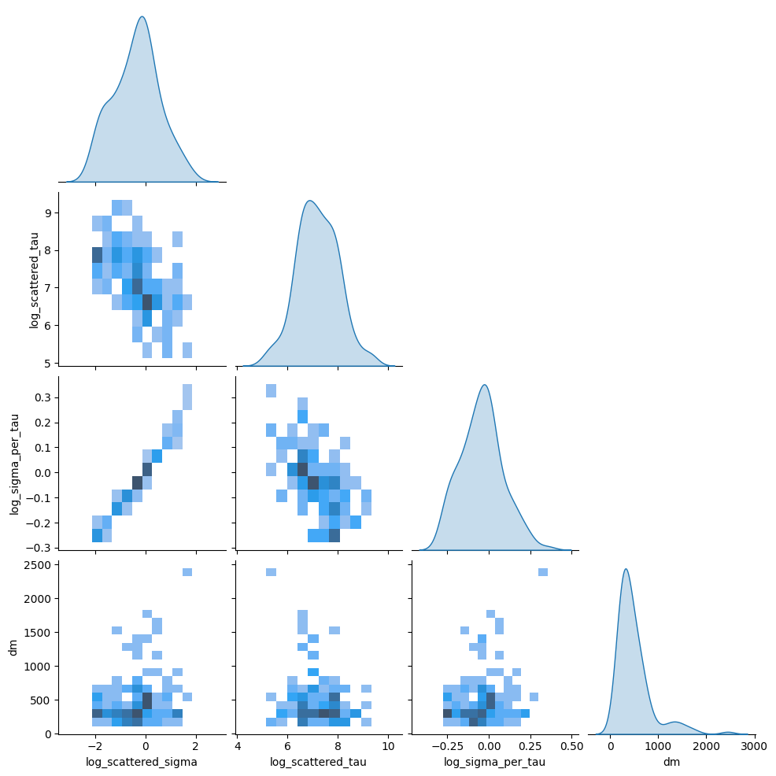

import pandas as pd
import numpy as np
import scipy
Note
📌 Goal: This notebook tries to differentiate between broadband and shortband single peak fast radio burst, as described in (Pleunis et al. 2021).
from pathlib import Path
from sarjana.signal import is_multipeak
catalog_file = Path('D://', 'home', 'datasets', 'sarjana', 'raw', 'cfod', 'chimefrb_profile_norfi.parquet')
catalog = pd.read_parquet(catalog_file)
# Resize time
catalog['plot_time'] = catalog['plot_time'] - (catalog['dt'] / 2)
catalog["multipeak"] = [is_multipeak(x.copy()) for x in catalog["ts"].values]
single_peaks = catalog[catalog["multipeak"] == False]single_file = Path('D://', 'home', 'datasets', 'sarjana', 'raw', 'wfall', 'FRB20190701E_waterfall.h5.parquet')
pd.read_parquet(single_file)| eventname | wfall | model_wfall | plot_time | plot_freq | ts | model_ts | spec | model_spec | extent | dm | scatterfit | dt | wfall_shape | cal_wfall_shape | cal_wfall | |
|---|---|---|---|---|---|---|---|---|---|---|---|---|---|---|---|---|
| 0 | FRB20190701E | [nan, nan, nan, nan, nan, nan, nan, nan, nan, ... | [nan, nan, nan, nan, nan, nan, nan, nan, nan, ... | [0.4915200115647167, 1.47456003469415, 2.45760... | [400.2197265625, 400.244140625, 400.2685546875... | [1.0231140851974487, 3.072990357875824, -16.58... | [0.00011334415066438012, 0.0001133441506643801... | [nan, nan, nan, nan, nan, nan, nan, nan, nan, ... | [0.002127421250213523, 0.002127393305711726, 0... | [0.0, 37.35552087891847, 400.20751953125, 800.... | 890.477065 | True | 0.98304 | [16384, 38] | None | None |
single_peaks| filename | eventname | plot_time | plot_freq | ts | model_ts | spec | model_spec | extent | dm | scatterfit | dt | multipeak | |
|---|---|---|---|---|---|---|---|---|---|---|---|---|---|
| 2 | FRB20180729A_waterfall.h5.parquet | FRB20180729A | [0.0, 0.9830399649217725, 1.966079929843545, 2... | [400.2197265625, 400.244140625, 400.2685546875... | [-0.5716363191604614, -17.364217936992645, 5.2... | [0.0030962208788418173, 0.0030962208788418173,... | [nan, nan, nan, nan, nan, nan, nan, nan, nan, ... | [0.00416778773145504, 0.0041719751674474635, 0... | [0.0, 18.677759333513677, 400.20751953125, 800... | 109.594181 | True | 0.98304 | False |
| 3 | FRB20180729B_waterfall.h5.parquet | FRB20180729B | [0.0, 0.9830400231294334, 1.9660800462588668, ... | [400.2197265625, 400.244140625, 400.2685546875... | [7.178313672542572, 16.028381049633026, -12.85... | [0.00022216660293127358, 0.0002221666029312735... | [nan, nan, nan, nan, nan, nan, nan, nan, nan, ... | [4.113813866711855e-05, 4.117462640763476e-05,... | [0.0, 37.35552087891847, 400.20751953125, 800.... | 317.223506 | True | 0.98304 | False |
| 4 | FRB20180730A_waterfall.h5.parquet | FRB20180730A | [0.0, 0.9830399649217725, 1.966079929843545, 2... | [400.2197265625, 400.244140625, 400.2685546875... | [28.190669357776642, -3.8035714626312256, 1.37... | [0.0003526762730453472, 0.0003526762730453472,... | [nan, nan, nan, nan, nan, nan, nan, nan, nan, ... | [0.009713658938378366, 0.009784989753700499, 0... | [0.0, 37.355518667027354, 400.20751953125, 800... | 848.904087 | True | 0.98304 | False |
| 8 | FRB20180810B_waterfall.h5.parquet | FRB20180810B | [0.0, 0.9830400813370943, 1.9660801626741886, ... | [400.2197265625, 400.244140625, 400.2685546875... | [11.590367555618286, -0.7796801924705505, 3.87... | [0.000770837060045753, 0.000770837060045753, 0... | [nan, nan, nan, nan, nan, nan, nan, nan, nan, ... | [0.012395891508303704, 0.01239529586531048, 0.... | [0.0, 18.677761545404792, 400.20751953125, 800... | 169.138526 | True | 0.98304 | False |
| 10 | FRB20180814B_waterfall.h5.parquet | FRB20180814B | [0.0, 0.9830399940256029, 1.9660799880512059, ... | [400.2197265625, 400.244140625, 400.2685546875... | [13.435711920261383, -34.95270961523056, 8.021... | [5.823073060752974e-49, 7.408350751003518e-41,... | [nan, nan, nan, nan, nan, nan, nan, nan, nan, ... | [0.0016093394878410432, 0.001609342656825253, ... | [0.0, 37.35551977297291, 400.20751953125, 800.... | 238.347359 | False | 0.98304 | False |
| ... | ... | ... | ... | ... | ... | ... | ... | ... | ... | ... | ... | ... | ... |
| 571 | FRB20190623B_waterfall.h5.parquet | FRB20190623B | [0.0, 0.9830399976635817, 1.9660799953271635, ... | [400.2197265625, 400.244140625, 400.2685546875... | [-7.816261172294617, 6.107970714569092, 9.2511... | [0.00034190650261076047, 0.0003419065026107604... | [nan, nan, nan, nan, nan, nan, nan, nan, nan, ... | [1.0068020284278203e-08, 1.0101373999610491e-0... | [0.0, 37.355519911216106, 400.20751953125, 800... | 1556.765041 | True | 0.98304 | False |
| 574 | FRB20190624B_waterfall.h5.parquet | FRB20190624B | [0.0, 0.9830399976635817, 1.9660799953271635, ... | [400.2197265625, 400.244140625, 400.2685546875... | [-5.652332425117493, 23.393622279167175, 7.056... | [6.59608089425059e-43, 4.5865270761136985e-28,... | [nan, nan, nan, nan, nan, nan, nan, nan, nan, ... | [1.1669434356811494e-05, 1.1517735828296239e-0... | [0.0, 18.677759955608053, 400.20751953125, 800... | 213.922189 | False | 0.98304 | False |
| 580 | FRB20190625D_waterfall.h5.parquet | FRB20190625D | [0.0, 0.9830399940256029, 1.9660799880512059, ... | [400.2197265625, 400.244140625, 400.2685546875... | [-16.88565695285797, 33.844458281993866, -9.81... | [1.601867475081894e-60, 1.6198470221664263e-50... | [nan, nan, nan, nan, nan, nan, nan, nan, nan, ... | [0.003710013880471254, 0.003714563006853791, 0... | [0.0, 37.35551977297291, 400.20751953125, 800.... | 717.883116 | False | 0.98304 | False |
| 583 | FRB20190627B_waterfall.h5.parquet | FRB20190627B | [0.0, 0.9830399940256029, 1.9660799880512059, ... | [400.2197265625, 400.244140625, 400.2685546875... | [2.3288493752479553, 18.383675038814545, -2.34... | [0.0006036649558608276, 0.0006036649558608276,... | [nan, nan, nan, nan, nan, nan, nan, nan, nan, ... | [0.004643797495785171, 0.004644052207172645, 0... | [0.0, 37.35551977297291, 400.20751953125, 800.... | 430.322387 | True | 0.98304 | False |
| 584 | FRB20190627C_waterfall.h5.parquet | FRB20190627C | [0.0, 0.9830399940256029, 1.9660799880512059, ... | [400.2197265625, 400.244140625, 400.2685546875... | [12.723131775856018, 14.152254581451416, 7.791... | [0.0009507172194947506, 0.0009507172194947506,... | [nan, nan, nan, nan, nan, nan, nan, nan, nan, ... | [0.007019124317181997, 0.007019041301162199, 0... | [0.0, 37.35551977297291, 400.20751953125, 800.... | 968.612733 | True | 0.98304 | False |
134 rows × 13 columns
def gauss(time: np.ndarray, sigma: float, amplitude: float = 1.0, peak_time: float = 0.0):
return amplitude * np.exp(-((time - peak_time) ** 2) / (2 * sigma**2))def scattered_gaussian_signal(
time: np.ndarray,
sigma: float,
tau: float,
amplitude: float = 1.0,
peak_time: float = 0.0,
) -> np.ndarray:
_time = time - peak_time
first_term: np.ndarray = -(_time / tau) + (sigma**2) / (2 * (tau**2))
second_term: np.ndarray = (_time / (np.sqrt(2) * sigma)) - (
sigma / (np.sqrt(2) * tau)
)
return amplitude * 0.5 * np.exp(first_term) * (1 + scipy.special.erf(second_term))from typing import Callable
from sarjana.optimize import fit_time_series
def generate_single_peak_model(data: pd.DataFrame, func: Callable) -> pd.DataFrame:
def try_fit(func, data) -> dict:
try:
return fit_time_series(
func,
data["plot_time"],
data["ts"],
params={
"amplitude": data["ts"].max(),
"peak_time": data["plot_time"][data["ts"].argmax()],
},
)
except RuntimeError:
return fit_time_series(
func,
data["plot_time"],
data["model_ts"],
params={
"amplitude": data["model_ts"].max(),
"peak_time": data["plot_time"][data["model_ts"].argmax()],
},
)
data[func.__name__] = data.apply(
lambda x: try_fit(func, x), axis="columns"
)
return datadf1 = generate_single_peak_model(single_peaks, scattered_gaussian_signal)
df1 = generate_single_peak_model(df1, gauss)d:\home\lab\sarjana\.venv\lib\site-packages\scipy\optimize\_minpack_py.py:881: OptimizeWarning: Covariance of the parameters could not be estimated
warnings.warn('Covariance of the parameters could not be estimated',
D:\home\lab\sarjana\sarjana\optimize.py:27: RuntimeWarning: invalid value encountered in sqrt
_stdevs = np.sqrt(np.diag(_pcov))
C:\Users\LENOVO\AppData\Local\Temp\ipykernel_13784\3695975889.py:27: SettingWithCopyWarning:
A value is trying to be set on a copy of a slice from a DataFrame.
Try using .loc[row_indexer,col_indexer] = value instead
See the caveats in the documentation: https://pandas.pydata.org/pandas-docs/stable/user_guide/indexing.html#returning-a-view-versus-a-copy
data[func.__name__] = data.apply(
C:\Users\LENOVO\AppData\Local\Temp\ipykernel_13784\3695975889.py:27: SettingWithCopyWarning:
A value is trying to be set on a copy of a slice from a DataFrame.
Try using .loc[row_indexer,col_indexer] = value instead
See the caveats in the documentation: https://pandas.pydata.org/pandas-docs/stable/user_guide/indexing.html#returning-a-view-versus-a-copy
data[func.__name__] = data.apply(data = df1[['eventname', 'dm', 'scattered_gaussian_signal', 'gauss']]
data['log_scattered_sigma'] = data['scattered_gaussian_signal'].apply(lambda x: np.log(x.get('sigma', 0)[0]))
data['log_scattered_sigma_err'] = data['scattered_gaussian_signal'].apply(lambda x: np.log(x.get('sigma', 0)[1]))
data['log_scattered_tau'] = data['scattered_gaussian_signal'].apply(lambda x: np.log(x.get('tau', 0)[0]))
data['log_scattered_tau_err'] = data['scattered_gaussian_signal'].apply(lambda x: np.log(x.get('tau', 0)[1]))
data['log_gauss_sigma'] = data['gauss'].apply(lambda x: np.log(x.get('sigma', 0)[0]))
data['log_gauss_sigma_err'] = data['gauss'].apply(lambda x: np.log(x.get('sigma', 0)[1]))
data['log_sigma_ratio'] = data['log_gauss_sigma']/data['log_scattered_sigma']
data['log_sigma_per_tau'] = data['log_scattered_sigma']/data['log_scattered_tau']
data['log_sigma_err_ratio'] = (data['log_scattered_sigma_err']-data['log_gauss_sigma_err'])/data['log_scattered_sigma_err']C:\Users\LENOVO\AppData\Local\Temp\ipykernel_13784\1968355826.py:2: SettingWithCopyWarning:
A value is trying to be set on a copy of a slice from a DataFrame.
Try using .loc[row_indexer,col_indexer] = value instead
See the caveats in the documentation: https://pandas.pydata.org/pandas-docs/stable/user_guide/indexing.html#returning-a-view-versus-a-copy
data['log_scattered_sigma'] = data['scattered_gaussian_signal'].apply(lambda x: np.log(x.get('sigma', 0)[0]))
C:\Users\LENOVO\AppData\Local\Temp\ipykernel_13784\1968355826.py:3: SettingWithCopyWarning:
A value is trying to be set on a copy of a slice from a DataFrame.
Try using .loc[row_indexer,col_indexer] = value instead
See the caveats in the documentation: https://pandas.pydata.org/pandas-docs/stable/user_guide/indexing.html#returning-a-view-versus-a-copy
data['log_scattered_sigma_err'] = data['scattered_gaussian_signal'].apply(lambda x: np.log(x.get('sigma', 0)[1]))
C:\Users\LENOVO\AppData\Local\Temp\ipykernel_13784\1968355826.py:4: SettingWithCopyWarning:
A value is trying to be set on a copy of a slice from a DataFrame.
Try using .loc[row_indexer,col_indexer] = value instead
See the caveats in the documentation: https://pandas.pydata.org/pandas-docs/stable/user_guide/indexing.html#returning-a-view-versus-a-copy
data['log_scattered_tau'] = data['scattered_gaussian_signal'].apply(lambda x: np.log(x.get('tau', 0)[0]))
C:\Users\LENOVO\AppData\Local\Temp\ipykernel_13784\1968355826.py:5: SettingWithCopyWarning:
A value is trying to be set on a copy of a slice from a DataFrame.
Try using .loc[row_indexer,col_indexer] = value instead
See the caveats in the documentation: https://pandas.pydata.org/pandas-docs/stable/user_guide/indexing.html#returning-a-view-versus-a-copy
data['log_scattered_tau_err'] = data['scattered_gaussian_signal'].apply(lambda x: np.log(x.get('tau', 0)[1]))
C:\Users\LENOVO\AppData\Local\Temp\ipykernel_13784\1968355826.py:6: SettingWithCopyWarning:
A value is trying to be set on a copy of a slice from a DataFrame.
Try using .loc[row_indexer,col_indexer] = value instead
See the caveats in the documentation: https://pandas.pydata.org/pandas-docs/stable/user_guide/indexing.html#returning-a-view-versus-a-copy
data['log_gauss_sigma'] = data['gauss'].apply(lambda x: np.log(x.get('sigma', 0)[0]))
C:\Users\LENOVO\AppData\Local\Temp\ipykernel_13784\1968355826.py:7: SettingWithCopyWarning:
A value is trying to be set on a copy of a slice from a DataFrame.
Try using .loc[row_indexer,col_indexer] = value instead
See the caveats in the documentation: https://pandas.pydata.org/pandas-docs/stable/user_guide/indexing.html#returning-a-view-versus-a-copy
data['log_gauss_sigma_err'] = data['gauss'].apply(lambda x: np.log(x.get('sigma', 0)[1]))
C:\Users\LENOVO\AppData\Local\Temp\ipykernel_13784\1968355826.py:8: SettingWithCopyWarning:
A value is trying to be set on a copy of a slice from a DataFrame.
Try using .loc[row_indexer,col_indexer] = value instead
See the caveats in the documentation: https://pandas.pydata.org/pandas-docs/stable/user_guide/indexing.html#returning-a-view-versus-a-copy
data['log_sigma_ratio'] = data['log_gauss_sigma']/data['log_scattered_sigma']
C:\Users\LENOVO\AppData\Local\Temp\ipykernel_13784\1968355826.py:9: SettingWithCopyWarning:
A value is trying to be set on a copy of a slice from a DataFrame.
Try using .loc[row_indexer,col_indexer] = value instead
See the caveats in the documentation: https://pandas.pydata.org/pandas-docs/stable/user_guide/indexing.html#returning-a-view-versus-a-copy
data['log_sigma_per_tau'] = data['log_scattered_sigma']/data['log_scattered_tau']
C:\Users\LENOVO\AppData\Local\Temp\ipykernel_13784\1968355826.py:10: SettingWithCopyWarning:
A value is trying to be set on a copy of a slice from a DataFrame.
Try using .loc[row_indexer,col_indexer] = value instead
See the caveats in the documentation: https://pandas.pydata.org/pandas-docs/stable/user_guide/indexing.html#returning-a-view-versus-a-copy
data['log_sigma_err_ratio'] = (data['log_scattered_sigma_err']-data['log_gauss_sigma_err'])/data['log_scattered_sigma_err']import seaborn as sns
g = sns.pairplot(data, vars=['log_scattered_sigma', 'log_scattered_tau', 'log_sigma_per_tau', 'dm'], corner=True, diag_kind='kde', kind='hist')
# g.set(xscale="log", yscale="log")
sns.histplot(data, x='scattered_sigma', y='scattered_tau')ValueError: Could not interpret value `scattered_sigma` for parameter `x`References
Pleunis, Ziggy, Deborah C. Good, Victoria M. Kaspi, Ryan Mckinven, Scott M. Ransom, Paul Scholz, Kevin Bandura, et al. 2021. “Fast Radio Burst Morphology in the First CHIME/FRB Catalog.” The Astrophysical Journal 923 (1): 1. https://doi.org/10.3847/1538-4357/ac33ac.